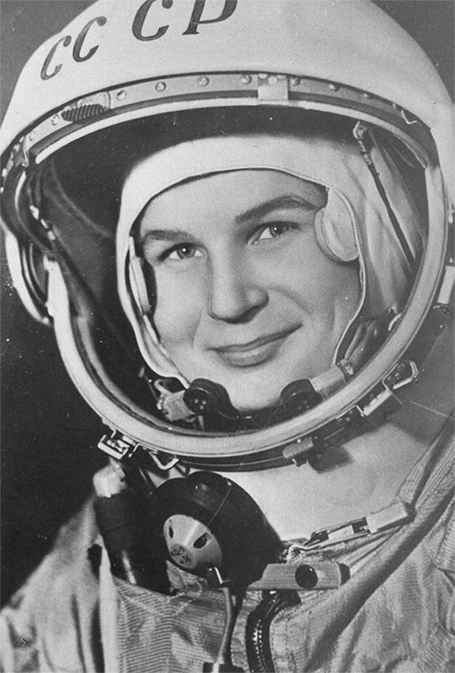

De eerste vrouw
Valentina Tereshkova, de eerste vrouw die de ruimte in werd gelanceerd (1963)
Valentina Tereshkova
Op 16 juni 1963 slaagde de voormalige Sovjet-Unie erin als eerste natie een vrouw de ruimte in te sturen en de 26-jarige kosmonaut Valentina Tereshkova te vervoeren . Uit meer dan 400 gegadigden werd ze met vier andere vrouwen geselecteerd voor de vrouwelijke kosmonautengroep. Van deze groep heeft alleen Teresjkova in de ruimte gevlogen. Teresjkova werd op 16 juni 1963 aan boord van de Vostok 6 gelanceerd, en werd daarmee de eerste vrouw en tevens eerste burger in de ruimte. Twee dagen eerder was de Vostok 5 gelanceerd. Tijdens de vlucht naderden de Vostok 5 en 6 elkaar tot op minder dan vijf kilometer en hadden ze onderling radiocontact. Teresjkova landde op aarde na een vlucht van bijna drie dagen. Plannen voor verdere vluchten met vrouwen werden afgelast. 19 jaar bleef Teresjkova de enige vrouw die in de ruimte had gevlogen, totdat op 19 augustus 1982 de Russische Svetlana Savitskaja haar volgde in de Sojoez T-7.